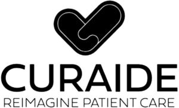

Trade Mark Journal No.2026/007 13 February 2026
WO0000001898861 (9,35,42)
Office of origin: United States of America
Date of International Registration:5 December 2025
Date of designation in the UK:
5 December 2025

The mark consists of the wording "CURAIDE" with the wording "REIMAGINE PATIENT CARE" below. A heart-shaped design element appears above the wording.
Registration of this mark shall not give right to the exclusive use of the words "PATIENT CARE".
- Class 9
- Downloadable chatbot software using artificial intelligence (AI) for simulating conversations, automating business processes, optimizing business efficiency, processing database information, and automating customer support, sales, and telemarketing.
- Class 35
- Business administration; providing office functions; advisory services relating to business management and business operations; accounting services; human resources management; customer service management for others; analyzing and compiling business data; analysis of business data; business services provided to the healthcare industry, namely, the collection, reporting, and analysis of healthcare quality data for business purposes; business and management consulting for healthcare providers and related businesses.
- Class 42
- Consulting services in the field of office and workplace automation; artificial intelligence as a service (AIAAS) services featuring software using artificial intelligence for data extraction, data analysis and data processing for the healthcare industry; artificial intelligence as a service (AIAAS) services featuring software using artificial intelligence for sending intelligent chat and email responses, and enabling automation of video and image editing; generative artificial intelligence as a service (GAIAAS) services featuring software using generative artificial intelligence (GenAI) for extracting data, analyzing data, and processing data for the healthcare industry; data automation and collection service using proprietary software to evaluate, analyze and collect service data.
Flatworld Solutions Inc.
Representative: Kourtney A. Mulcahy Akerman LLP, 777 South Flagler Drive,, Suite 1100 West Tower, West Palm Beach FL 33401, UNITED STATES OF AMERICA